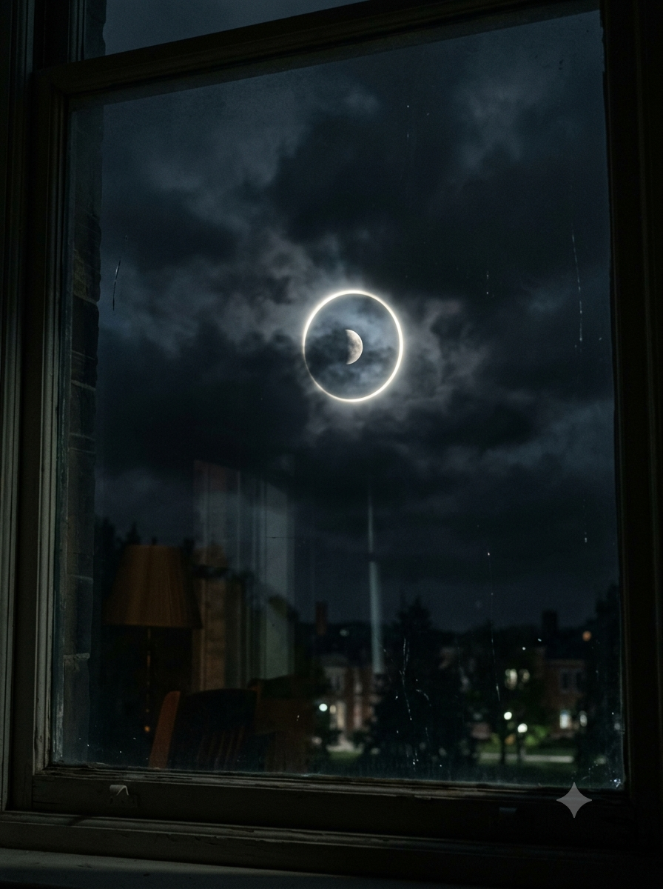

我拍到了月亮。但那天，天气预报说阴天，柳莎朗也说她没有看到月亮。
📷 [照片] 无月夜的月光边缘 · 拍摄于2025-08-11 03:17
（月亮被乌云遮住，但边缘有一圈清晰的光）
（月亮被乌云遮住，但边缘有一圈清晰的光）

这不是自然现象。我见过很多次月晕，但这个不一样。光的边缘太整齐了，像是被切割过的。
我对比了柳莎朗同一天的帖子。她说：“那天是阴天，没有月亮。”
我们在同一个时间，同一个地点，看到了不同的景象。
📋 [对照表] Jungeun vs 柳莎朗 · 七组矛盾描述
1. 月亮 / 无月亮
2. 施工声音 / 没有施工
3. 下雨 / 晴天
4. 爬山虎 / 水泥墙
5. 日光灯 / 黑暗
6. 椅子 / 空房间
7. 回声 / 寂静
1. 月亮 / 无月亮
2. 施工声音 / 没有施工
3. 下雨 / 晴天
4. 爬山虎 / 水泥墙
5. 日光灯 / 黑暗
6. 椅子 / 空房间
7. 回声 / 寂静
后来我明白了。不是谁对谁错。是我们看到了不同的时间线。
我在B2里发现了那七样东西。它们是真实的。在某个时间线里，它们存在。
📌 补充信息：
我一直在等。等有人能把这些碎片拼起来。但每次我试图告诉别人，帖子就会变成乱码。
她不想让我说出去。